Start with one neuron, expand it into Dense layers, then train a small network on a curved spiral dataset.
Brief Intro
A neural network is a model that learns from examples. Instead of writing every rule by hand, we give it data, compare its prediction with the correct answer, and let it adjust its internal numbers until the predictions improve.
The idea is loosely inspired by biological neurons: many small units receive signals, combine them, and pass a result forward. In machine learning, those signals are numbers, and the things being adjusted are weights and biases.
This post builds that idea from the smallest useful piece: one neuron. Once that one piece is clear, every later section only answers one question: how do we make the same idea handle more inputs, more samples, harder shapes, and actual learning?
Companion notebook: src/0.neural_net/0. neural_network_from_scratch.ipynb. The notebook uses pure NumPy, no PyTorch, no autograd.
One Neuron
The smallest neural network unit receives inputs, multiplies them by weights, adds a bias, and produces one output. This is the smallest place where the main ingredients appear: input, weight, bias, prediction, and loss.
With one input, the neuron is just a line:
output = weight * input + biasx = 3
w = 0.8
b = 2
output = w * x + b
print(output) # 4.4- Input: the value the model receives.
- Weight: controls how strongly the input affects the output.
- Bias: shifts the output up or down.
- Output: the prediction from this tiny model.
The weight changes the slope of the line. A larger positive weight makes the output climb faster as the input grows. A negative weight flips the slope downward. The bias shifts the whole line up or down without changing the slope.
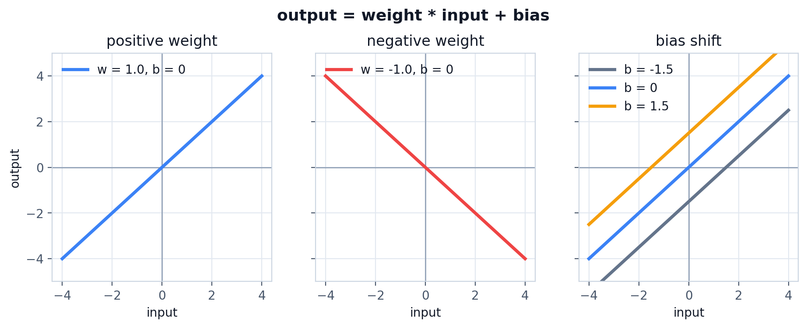
With more than one input feature, one neuron still produces one output. In vector form, the neuron takes a dot product between the input vector and the weight vector, then adds one bias:
output = dot(inputs, weights) + biasExpanded, that same dot product is just a weighted sum:
output = sum(inputs * weights) + biasinputs = [1, 2, 3]
weights = [0.2, 0.8, -0.5]
bias = 2
output = (
inputs[0] * weights[0]
+ inputs[1] * weights[1]
+ inputs[2] * weights[2]
+ bias
)
print(output) # 2.3Shape view for this one-neuron case:
inputs [D]
weights [D]
output scalarDrawn as a small computation graph:
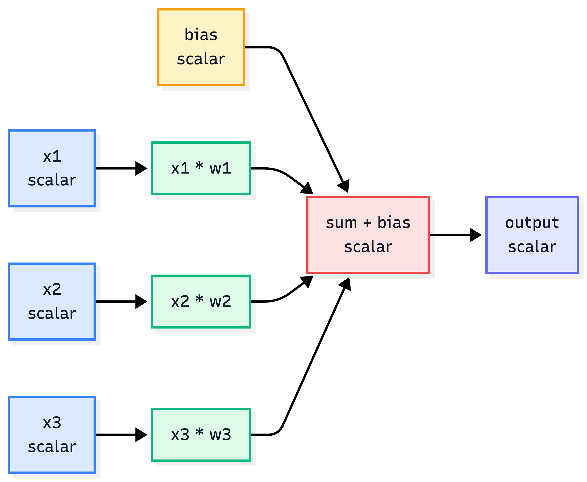
The model is useful only if we can say how wrong it was. For a simple regression target, squared error is enough:
target = 3.0
loss = (output - target) ** 2
print(loss) # 0.49Bonus: Why squared error?
The raw error can be positive or negative:
error = output - targetIf output = 2.3 and target = 3.0, the error is -0.7. If output = 3.7, the error is 0.7. Both predictions are equally wrong, but the signs are different. Squaring removes the sign:
(-0.7) ** 2 = 0.49
( 0.7) ** 2 = 0.49Why not use absolute error?
loss = abs(output - target)Absolute error also removes the sign, but it has a sharp corner at 0, so the derivative is not defined exactly at the target. Away from 0, its gradient is always either -1 or 1.
That means the gradient push has the same strength whether the model is very far from the target or already very close. Squared error changes that:
loss = error ** 2
dLoss/dError = 2 * errorWhen the error is large, the gradient is large. When the error gets small, the gradient also gets small. This gives training a natural braking effect near the target.
Why not use a fourth power?
loss = error ** 4
dLoss/dError = 4 * error ** 3Now the loss becomes too sensitive. A small error like 0.5 gives a tiny gradient, while a large error like 10 gives a gradient of 4000. Squared error is a useful middle ground for this first regression example: it removes the sign, gives smooth gradients, and makes larger mistakes matter more without being as extreme as higher powers.
For classification, we will switch to cross-entropy later. Squared error is only here because it is the simplest loss for understanding one numeric prediction.
The output is the prediction. The loss is the penalty. Training is the process of changing the weights and bias so the loss gets smaller.
The important distinction is that inputs come from data, while weights and biases belong to the model. During training, the input values stay fixed for a given sample; the model changes its weights and biases to make better outputs.
This hand-written neuron is useful because every number is visible. It is also obviously not how we want to write a real model, so the next step is to replace the repeated arithmetic with array operations.
Arrays, Matrices, and Tensors
The previous neuron had three inputs and three weights. A real model may have millions, so the first upgrade is not conceptual; it is notation. The same weighted sum can be written as a dot product between an input vector and a weight vector.
inputs = np.array([1, 2, 3])
weights = np.array([0.2, 0.8, -0.5])
bias = 2
output = inputs @ weights + biasShape view:
inputs [D]
weights [D]
output scalarThe dot product does exactly what the hand-written neuron did:
inputs @ weights
= inputs[0] * weights[0]
+ inputs[1] * weights[1]
+ inputs[2] * weights[2]To produce multiple outputs, put many weight vectors side by side in a matrix:
x [D]
W [D, H]
b [H]
out [H] = x @ W + bTo process many samples at once, stack the samples into a batch:
X [B, D] # B samples, D features per sample
W [D, H] # D input features, H output features
b [1, H] # broadcast across the batch
out [B, H] = X @ W + bThis is the shape convention used through the rest of the post:
Rows are samples.
Columns are features.Matrix multiplication has one rule that matters here: the inner dimensions must match.
X @ W
[B, D] @ [D, H] -> [B, H]The D dimensions disappear into dot products. The remaining dimensions become the output shape: one row per sample, one column per output feature.
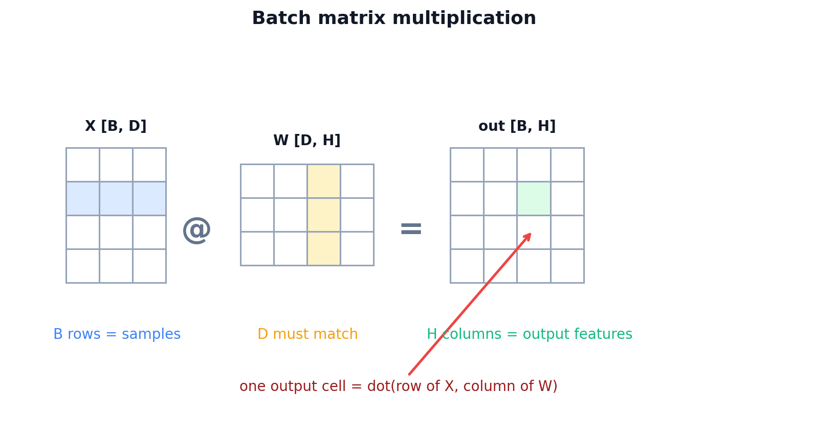
In deep learning code, “tensor” usually means a multidimensional array. A vector is a 1D tensor, a matrix is a 2D tensor, and a batch of images might be a 4D tensor like [B, H, W, C]. Arrays also need to be rectangular along each dimension: every row in a matrix must have the same number of columns, otherwise it is just a ragged Python list and not a useful numeric array.
Once the shapes are written this way, the next abstraction is almost forced: package X @ W + b into a reusable layer.
Dense Layer
A Dense layer is the array version of many neurons sitting side by side. Every neuron receives the same input vector, but each neuron owns a different weight column and a different bias. The layer wraps X @ W + b, takes a batch of vectors, and projects each vector into a new feature space.
For the first pass, ignore gradients and look only at the forward computation.
class Dense:
def __init__(self, n_in, n_out, rng, init="xavier"):
if init == "he":
scale = np.sqrt(2.0 / n_in)
elif init == "xavier":
scale = np.sqrt(1.0 / n_in)
else:
raise ValueError(f"unknown init: {init}")
self.W = rng.normal(0.0, scale, size=(n_in, n_out))
self.b = np.zeros((1, n_out))
def forward(self, x, training=True):
return x @ self.W + self.bFor B = 32, D = 2, H = 64:
x [32, 2]
W [2, 64]
b [1, 64]
out [32, 64]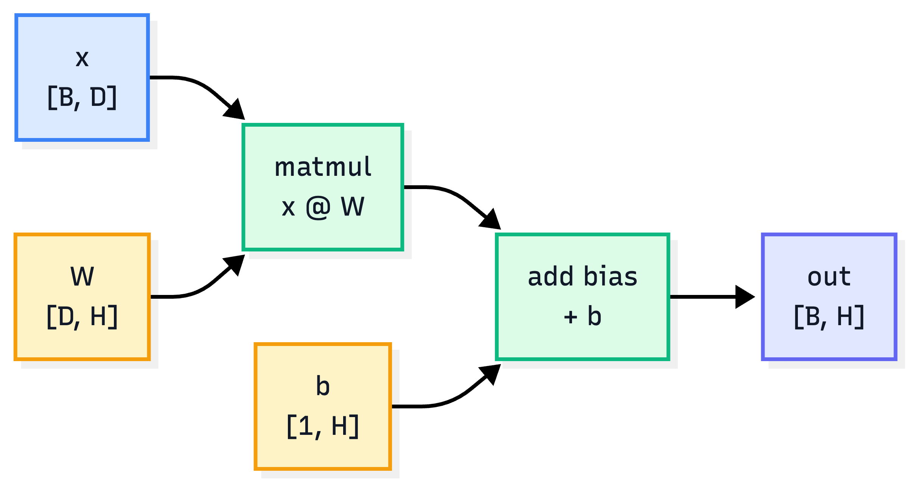
n_inis the number of input features.n_outis the number of output features.Wstores one column per output feature.bis broadcast across all rows in the batch.
The weight matrix shape is chosen so the forward pass does not need a transpose:
X [B, D] @ W [D, H] -> out [B, H]Some tutorials store weights as [H, D] and call X @ W.T. Both layouts represent the same math. This post stores weights as [D, H] because the forward pass reads directly as X @ W + b.
Weights start as small random numbers so neurons do not all behave identically. Biases usually start at zero because the weights already break symmetry; the bias can learn its offset later.
One Dense layer is already enough to build a linear classifier. Using the Sequential wrapper we define later, a [B, 2] input can map to 3 class scores:
linear_model = Sequential([
Dense(2, 3, np.random.default_rng(100), init="xavier"),
])X [B, 2]
W [2, 3]
b [1, 3]
logits [B, 3] = X @ W + bThe three output numbers are called logits. They are raw class scores, not probabilities. The predicted class is the index of the largest logit:
preds = logits.argmax(axis=1)That gives us the simplest classifier worth testing. Before adding hidden layers, we should see exactly where this linear model breaks.
The First Target: Spiral Data
The Dense layer can produce class scores, but a toy classifier is only interesting if the data exposes its limits. Linear data can be fit by a straight line or a few straight decision regions. Spiral data is still easy to draw, but not easy for straight lines. Each sample is a 2D point, and the label is one of three spiral arms.
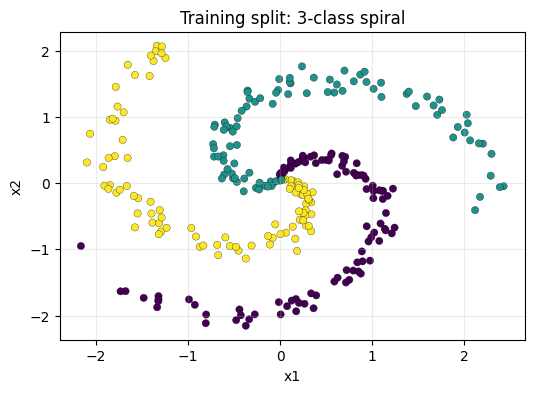
def make_spiral(samples_per_class=120, n_classes=3, noise=0.20, seed=42):
rng = np.random.default_rng(seed)
X = np.zeros((samples_per_class * n_classes, 2), dtype=np.float64)
y = np.zeros(samples_per_class * n_classes, dtype=np.int64)
for class_id in range(n_classes):
ix = slice(class_id * samples_per_class, (class_id + 1) * samples_per_class)
r = np.linspace(0.0, 1.0, samples_per_class)
t = np.linspace(class_id * 4.0, (class_id + 1) * 4.0, samples_per_class)
t = t + rng.normal(0.0, noise, samples_per_class)
X[ix] = np.c_[r * np.sin(t), r * np.cos(t)]
y[ix] = class_id
return X, yThe shapes are small:
X [360, 2] # 360 points, each point has x1 and x2
y [360] # integer labels: 0, 1, 2
logits [360, 3] # one score per classRead the plot literally: each dot is one training example, and the color is the label. The word “spiral” only describes the shape of the toy dataset. We use it because a straight line cannot separate the classes, but the data is still small enough to debug.
Each sample has two features:
sample = [x1, x2]
target = class_idThe colors in the plot are only for us. The model does not see red, green, or blue. It only sees two coordinates and a target label like 0, 1, or 2.
The one-layer linear model exposes the first failure mode:
Linear model:
X [B, 2] -> Dense(2, 3) -> logits [B, 3]With the notebook seed, the linear baseline reaches 48.6% validation accuracy (54.5% train accuracy). It learns three broad regions split by straight lines, but the spiral needs a boundary that bends.
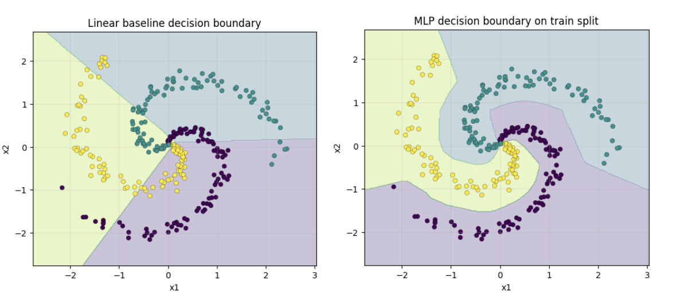
The important point: the linear baseline does not fail because the optimizer is bad. It fails because one Dense layer can only draw linear boundaries. A hidden layer gives the model more room, but only if we add something that prevents stacked Dense layers from collapsing back into one linear map.
ReLU: Why Dense Layers Need an Activation
The spiral failure suggests adding a hidden layer. But adding another Dense layer by itself does not solve the problem, because two linear transformations in a row still collapse into one linear transformation.
y = (X @ W1 + b1) @ W2 + b2
= X @ (W1 @ W2) + (b1 @ W2 + b2)
= X @ W' + b'Without a nonlinearity, stacking Dense layers only creates a bigger linear model. ReLU breaks that collapse with one small function:
class ReLU:
def forward(self, x, training=True):
self.mask = x > 0
return np.maximum(0.0, x)
def backward(self, dout):
return dout * self.mask
def parameters(self):
return []ReLU(x) = max(0, x)- Forward: positive values pass through, negative values become
0. - Backward: gradients pass only through positions that were positive during the forward pass.
- Effect: many ReLU units split the input space into small linear regions that can bend around the spiral.
The step function is the simplest “fire or do not fire” activation, but it throws away too much information: every positive input becomes the same 1, and every negative input becomes the same 0. ReLU keeps the useful part of that idea without collapsing all positive values together.
step(-0.1) = 0 step(100.0) = 1
ReLU(-0.1) = 0 ReLU(100.0) = 100.0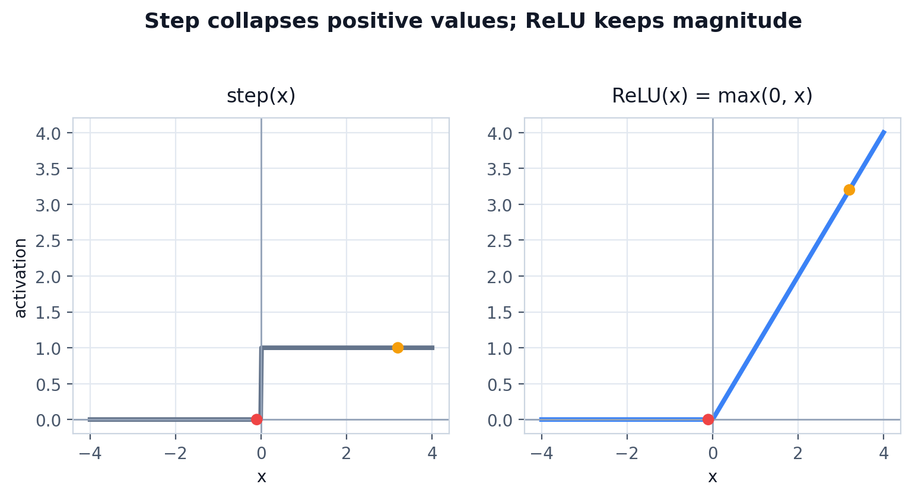
That difference matters for learning. A ReLU neuron has an activation region: inputs on one side of its threshold are silent, and inputs on the other side pass through with their size preserved. Many such regions can approximate a curved boundary with piecewise-linear segments.
Our main MLP only adds one hidden Dense layer and one ReLU:
model = Sequential([
Dense(2, 64, np.random.default_rng(101), init="he"),
ReLU(),
Dense(64, 3, np.random.default_rng(102), init="xavier"),
])X [B, 2]
Dense1 [B, 64]
ReLU [B, 64]
Dense2 [B, 3]
logits [B, 3]The first Dense layer creates 64 hidden features. ReLU gates those features. The second Dense layer mixes the gated features into 3 class scores.
ReLU gives the model the shape it was missing. The next problem is different: the model now returns three raw scores per point, so we need a clean way to read those scores as class predictions and training loss.
Softmax: From Logits to Class Probabilities
The ReLU MLP ends with logits: raw class scores. For prediction, we only need the largest logit:
def accuracy(model, X, y):
logits = model.forward(X, training=False)
preds = logits.argmax(axis=1)
return (preds == y).mean()Softmax is useful when we want class probabilities and a classification loss. It does two things:
- Exponentiate logits so every value becomes positive.
- Normalize each row so the values sum to 1.
shifted = logits - logits.max(axis=1, keepdims=True)
exp_scores = np.exp(shifted)
probs = exp_scores / exp_scores.sum(axis=1, keepdims=True)logits [B, C]
probs [B, C]
y [B]Each row of probs sums to 1. The largest probability points to the predicted class, but the probabilities also tell us how confident the model was.
logits row: [4.8, 1.2, 2.4]
softmax row: [0.90, 0.02, 0.08]
prediction: class 0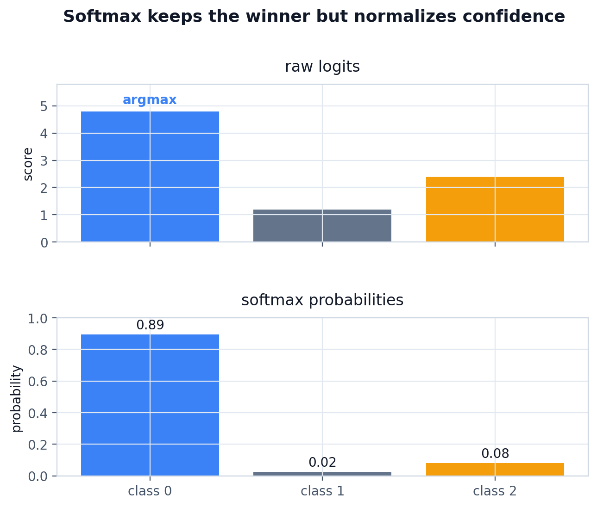
The exponential is monotonic: a larger logit still becomes a larger exponentiated value. That means softmax does not change which class wins; it changes raw scores into comparable confidence values.
Cross-entropy penalizes the model when the correct class gets low probability:
correct_probs = probs[np.arange(len(y)), y]
loss = -np.log(correct_probs + 1e-12).mean()For sparse labels, y contains class indices:
probs:
sample 0 -> [0.70, 0.10, 0.20]
sample 1 -> [0.10, 0.50, 0.40]
sample 2 -> [0.02, 0.90, 0.08]
y = [0, 1, 1]
correct_probs = [0.70, 0.50, 0.90]
losses = -log(correct_probs)Cross-entropy only needs the probability assigned to the correct class. If the correct class gets probability near 1, the loss is near 0. If it gets probability near 0, the loss becomes very large.
The subtraction in stable softmax is a numerical trick:
softmax([1000, 1001, 1002])
== softmax([-2, -1, 0])Softmax contains exp, so large logits can overflow. Subtracting the per-sample max keeps the numbers safe without changing the probabilities.
In the loss, we also clip or add a tiny epsilon around probabilities before log. The reason is practical: -log(0) is infinite, and one infinite value can ruin the whole training step.
Now we have a scalar loss. The loss tells us how wrong the model is; backpropagation tells us how each weight should move to reduce it.
Backpropagation
The forward pass produced logits, and cross-entropy turned those logits into one loss number. Training needs the reverse path: how did each parameter affect that loss? A gradient is that sensitivity: if this weight moves a little, how does the loss move?
Start with a one-variable function:
y = f(x)The derivative tells us the slope at a point. For a line, the slope is constant. For a curve, the slope depends on where we measure it. In training, the “curve” is the loss as a function of every weight and bias in the model.
Neural networks have many parameters, so we need partial derivatives:
dLoss/dW1 how much W1 affected the loss
dLoss/db1 how much b1 affected the loss
dLoss/dX how much the layer input affected the lossBackpropagation is chain rule bookkeeping. The model is a chain of functions:
X -> Dense1 -> ReLU -> Dense2 -> SoftmaxCrossEntropy -> lossgraph LR
X["X<br/>[B, 2]"] --> D1["Dense1<br/>[B, 64]"]
D1 --> R["ReLU<br/>[B, 64]"]
R --> D2["Dense2<br/>logits [B, 3]"]
D2 --> L["SoftmaxCrossEntropy<br/>loss scalar"]
L -. "dlogits [B, 3]" .-> D2B["Dense2.backward"]
D2B -. "dhidden [B, 64]" .-> RB["ReLU.backward"]
RB -. "dhidden [B, 64]" .-> D1B["Dense1.backward"]
style X fill:#DBEAFE,stroke:#3B82F6,color:#111827
style D1 fill:#DCFCE7,stroke:#10B981,color:#111827
style R fill:#DCFCE7,stroke:#10B981,color:#111827
style D2 fill:#DCFCE7,stroke:#10B981,color:#111827
style L fill:#FEE2E2,stroke:#EF4444,color:#111827
style D2B fill:#FEF3C7,stroke:#F59E0B,color:#111827
style RB fill:#FEF3C7,stroke:#F59E0B,color:#111827
style D1B fill:#FEF3C7,stroke:#F59E0B,color:#111827
Forward values move left to right. Gradients start at the loss and move backward through the same layers in reverse order.
The gradient starts at the loss and moves backward through that chain. Each layer receives an incoming gradient, multiplies it by its local derivative, stores gradients for its own parameters, then returns the gradient for the previous layer.
That gives each layer two concrete jobs:
1. Compute gradients for its own parameters.
2. Return the gradient for the layer before it.In code, trainable arrays are easier to manage if each one stores both its value and gradient:
class Parameter:
"""Trainable array plus its gradient."""
def __init__(self, value):
self.value = np.asarray(value, dtype=np.float64)
self.grad = np.zeros_like(self.value)
def zero_grad(self):
self.grad.fill(0.0)Now the Dense layer can cache its input during the forward pass and reuse it during the backward pass:
class Dense:
def __init__(self, n_in, n_out, rng, init="he"):
if init == "he":
scale = np.sqrt(2.0 / n_in)
elif init == "xavier":
scale = np.sqrt(1.0 / n_in)
else:
raise ValueError(f"unknown init: {init}")
self.W = Parameter(rng.normal(0.0, scale, size=(n_in, n_out)))
self.b = Parameter(np.zeros((1, n_out)))
def forward(self, x, training=True):
self.x = x
return x @ self.W.value + self.b.value
def backward(self, dout):
self.W.grad[...] = self.x.T @ dout
self.b.grad[...] = dout.sum(axis=0, keepdims=True)
return dout @ self.W.value.T
def parameters(self):
return [self.W, self.b]Shape view:
Forward:
x [B, D]
W [D, H]
b [1, H]
out [B, H]
Backward:
dout [B, H]
dW [D, H] = x.T @ dout
db [1, H] = sum(dout over batch)
dx [B, D] = dout @ W.Tdoutis the gradient arriving from the next layer.W.gradhas the same shape asW.value, because the optimizer updates every weight.b.gradsums over the batch because the same bias is broadcast to every sample.dxis not a parameter update. It is the gradient passed to the previous layer.
Why is dW = x.T @ dout? Each weight connects one input feature to one output neuron. For a batch, the gradient for that weight accumulates the product of:
input feature value * incoming gradient for that neuronWriting all those products at once gives:
x.T [D, B]
dout [B, H]
dW [D, H]Why is db = sum(dout)? The same bias is added to every sample in the batch, so its total effect is the sum of all incoming gradients for that output neuron.
Why is dx = dout @ W.T? The previous layer needs to know how the current layer’s output depends on its input. The weights tell us how strongly each input feature contributed to each output feature, so the gradient flows back through W.T.
For softmax plus cross-entropy, the gradient has a compact form:
class SoftmaxCrossEntropy:
def forward(self, logits, y):
shifted = logits - logits.max(axis=1, keepdims=True)
exp_scores = np.exp(shifted)
self.probs = exp_scores / exp_scores.sum(axis=1, keepdims=True)
self.y = y
correct_probs = self.probs[np.arange(len(y)), y]
return -np.log(correct_probs + 1e-12).mean()
def backward(self):
grad = self.probs.copy()
grad[np.arange(len(self.y)), self.y] -= 1.0
grad /= len(self.y)
return gradFor one sample whose correct class is 2:
probs before: [0.70, 0.20, 0.10]
one_hot(y): [0.00, 0.00, 1.00]
gradient: [0.70, 0.20, -0.90]Positive gradients on the wrong classes push those logits down. The negative gradient on the correct class pushes that logit up.
That compact gradient is the reason many implementations combine Softmax and Cross-Entropy into one class for backward. Calculating the Softmax Jacobian separately is possible, but the combined derivative simplifies to:
dlogits = (probs - one_hot(y)) / batch_sizeAt this point each layer knows how to run forward and backward. The next piece is only plumbing: connect the layers so the whole model behaves like one object.
Sequential: A Tiny Framework
The Dense and ReLU layers now share the same pattern: run forward, keep the state needed for backward, then send gradients back. The loss function will stay outside the model, and Sequential will connect the model layers into one object.
class Sequential:
def __init__(self, layers):
self.layers = layers
def forward(self, x, training=True):
for layer in self.layers:
x = layer.forward(x, training=training)
return x
def backward(self, grad):
for layer in reversed(self.layers):
grad = layer.backward(grad)
return grad
def parameters(self):
params = []
for layer in self.layers:
params.extend(layer.parameters())
return params
def zero_grad(self):
for param in self.parameters():
param.zero_grad()Forward goes left to right:
X -> Dense1 -> ReLU -> Dense2 -> logits -> lossBackward goes right to left:
dlogits -> Dense2.backward -> ReLU.backward -> Dense1.backwardLayers with parameters expose Parameter objects to the optimizer. Layers without parameters, like ReLU, only pass gradients along.
After backward, every trainable parameter has a gradient. Those gradients still do nothing until an optimizer uses them to change the parameter values.
Optimizer: SGD
Backpropagation computes gradients; SGD uses them. It does not need to know which layer a parameter came from. It only sees each Parameter and moves its value in the opposite direction of grad.
class SGD:
def __init__(self, lr=0.75):
self.lr = lr
def step(self, params):
for param in params:
param.value -= self.lr * param.gradThe word “descent” means we move downhill on the loss curve. If the gradient points in the direction where loss increases fastest, -gradient points toward lower loss.
Before gradients, one naive idea is random search: try random weights, keep them if loss improves, and repeat. That can work on tiny examples, but it scales terribly because a real network has thousands or millions of parameters. Gradients give direction instead of blind guessing.
The learning rate controls how large each update step is:
lr
|
Typical behavior |
|---|---|
| Too small | Loss decreases very slowly |
| About right | Loss decreases smoothly, accuracy rises |
| Too large | Loss jumps around or becomes nan |
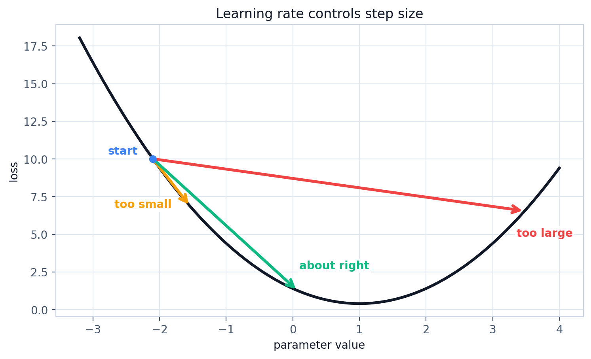
SGD optimizes loss, not accuracy directly. Accuracy can sometimes stay flat while loss improves because the model is becoming more confident on already-correct samples, or less wrong on hard samples, before enough predictions flip to change accuracy.
In the notebook, lr = 0.75 works well for the small MLP on the spiral dataset with He initialization. If you change hidden size, noise, normalization, or batch size, the best learning rate can change too.
We now have every moving part: model, loss, gradients, and optimizer. The full training loop is just those parts in the right order.
Training the MLP
All previous sections were pieces of this loop. Now they run together: forward pass, loss, backward pass, parameter update, then repeat.
graph TD
DATA["X_train, y_train<br/>batch data"] --> FWD["model.forward<br/>logits"]
FWD --> LOSS["loss_fn.forward<br/>scalar loss"]
LOSS --> ZERO["model.zero_grad<br/>clear old grads"]
ZERO --> BWD["loss_fn.backward + model.backward<br/>write gradients"]
BWD --> STEP["optimizer.step<br/>update parameters"]
STEP --> NEXT["next epoch"]
NEXT --> DATA
FWD --> EVAL["accuracy on train/val<br/>training=False"]
style DATA fill:#DBEAFE,stroke:#3B82F6,color:#111827
style FWD fill:#DCFCE7,stroke:#10B981,color:#111827
style LOSS fill:#FEE2E2,stroke:#EF4444,color:#111827
style ZERO fill:#FEF3C7,stroke:#F59E0B,color:#111827
style BWD fill:#FEF3C7,stroke:#F59E0B,color:#111827
style STEP fill:#DCFCE7,stroke:#10B981,color:#111827
style NEXT fill:#E0E7FF,stroke:#6366F1,color:#111827
style EVAL fill:#F3E8FF,stroke:#8B5CF6,color:#111827
The training loop repeats the same sequence: predict, measure loss, clear gradients, backpropagate, update parameters, and evaluate without training-only behavior.
loss_fn = SoftmaxCrossEntropy()
optimizer = SGD(lr=0.75)
for epoch in range(2001):
logits = model.forward(X_train, training=True)
loss = loss_fn.forward(logits, y_train)
model.zero_grad()
model.backward(loss_fn.backward())
optimizer.step(model.parameters())
if epoch % 100 == 0:
train_acc = accuracy(model, X_train, y_train)
val_acc = accuracy(model, X_val, y_val)
print(epoch, loss, train_acc, val_acc)One concrete pass:
1. model.forward
X_train [288, 2] -> logits [288, 3]
2. loss_fn.forward
logits [288, 3] + y_train [288] -> scalar loss
3. loss_fn.backward
scalar loss -> dlogits [288, 3]
4. model.zero_grad
clear old gradients before writing new ones
5. model.backward
dlogits -> dW2, db2, dW1, db1
6. optimizer.step
W1, b1, W2, b2 move a little bitOne full pass over the training data is called an epoch. This notebook uses the whole training set in each update, which keeps the code simple. In larger training runs, the same logic usually runs on mini-batches:
full-batch: one update uses all training samples
mini-batch: one update uses a smaller slice, like 32 or 128 samplesMini-batches are faster on hardware and usually produce updates that generalize better than fitting one sample at a time.
After a few hundred epochs, loss drops clearly. With the notebook seed, the final MLP reaches 98.6% validation accuracy and 99.7% train accuracy. The number is not the main lesson; the decision boundary is.
The linear model creates hard straight boundaries. The MLP creates a piecewise-linear boundary with enough small pieces to wrap around the spiral. The network does not hard-code a curved formula; it learns to stitch many local linear maps together.
That result is good, but it is still only meaningful if the model works beyond the exact points it trained on.
Validation Data and Test Data
The training loop can make training loss go down even when the model is memorizing. Low training loss does not guarantee the model learned the real pattern. That is why we split the data.
graph LR
DATASET["full dataset<br/>X, y"] --> SHUFFLE["shuffle indices"]
SHUFFLE --> TRAIN["training split<br/>updates weights"]
SHUFFLE --> VAL["validation split<br/>chooses settings"]
SHUFFLE --> TEST["test split<br/>final check only"]
style DATASET fill:#DBEAFE,stroke:#3B82F6,color:#111827
style SHUFFLE fill:#DCFCE7,stroke:#10B981,color:#111827
style TRAIN fill:#FEF3C7,stroke:#F59E0B,color:#111827
style VAL fill:#E0E7FF,stroke:#6366F1,color:#111827
style TEST fill:#FEE2E2,stroke:#EF4444,color:#111827
Training data changes the parameters, validation data guides development choices, and test data should stay untouched until the end.
def train_val_split(X, y, val_ratio=0.20, seed=7):
rng = np.random.default_rng(seed)
idx = rng.permutation(len(X))
split = int((1.0 - val_ratio) * len(X))
train_idx, val_idx = idx[:split], idx[split:]
return X[train_idx], y[train_idx], X[val_idx], y[val_idx]Training data used to update weights
Validation data used to check choices during development
Test data used once at the endFor this small post, the notebook uses a train/validation split. In a larger project, keep a separate test set untouched until the final evaluation.
The reason for the split is not ceremony. A large enough network can memorize the exact training points. On the training scatter plot, that can look impressive. On new points from the same distribution, the decision boundary may fail because it learned the accidents of the training sample rather than the rule behind the data.
Overfitting looks like this:
train loss keeps going down
train accuracy keeps going up
validation accuracy stops improving or drops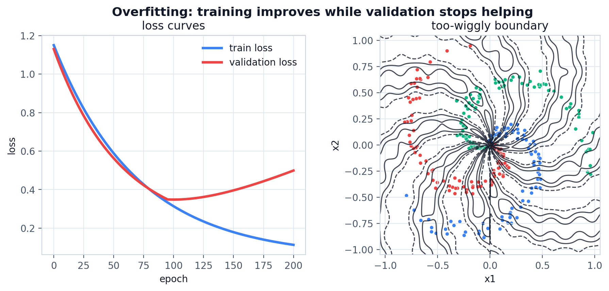
When splitting data, avoid leakage. For ordinary shuffled tabular data, random splitting may be fine. For time-series data, random splitting can be misleading because neighboring timestamps can be almost identical. In that case, hold out whole time blocks so validation really means “future or unseen conditions.”
The model is not done when it fits the training data. It is done when it also works on data it did not train on.
When validation performance starts to lag behind training performance, the next question is how to reduce memorization without removing the model’s ability to learn.
Generalization: L1, L2, and Dropout
Validation data tells us when the model is overfitting. Regularization is one way to respond: it adds pressure against memorization while keeping the same forward/backward/optimizer structure.
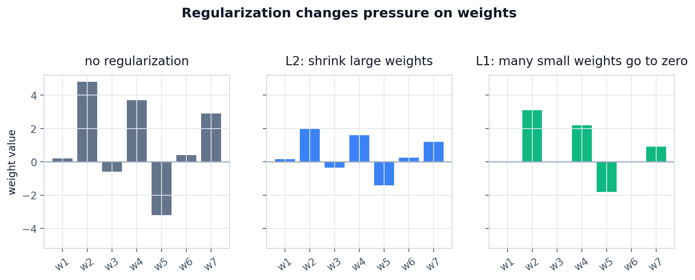
L2 regularization penalizes large weights. It adds a second term to the loss:
data_loss = loss_fn.forward(logits, y_train)
l2_loss = lambda_l2 * np.sum(W * W)
loss = data_loss + l2_lossThe square matters. A weight of 10 gets penalized much more than a weight of 1, so L2 discourages the model from leaning too hard on a few large parameters.
The backward contribution is simple:
dW += 2 * lambda_l2 * WL1 regularization penalizes absolute weight size:
data_loss = loss_fn.forward(logits, y_train)
l1_loss = lambda_l1 * np.sum(np.abs(W))
loss = data_loss + l1_lossL1 pushes small weights toward exactly zero more aggressively than L2. That can make the model sparse, but it is less common to use L1 alone for basic neural networks.
The backward contribution is based on the sign of the weight:
dW += lambda_l1 * sign(W)Dropout attacks memorization differently. It randomly zeroes part of an activation during training so the model cannot depend too heavily on a few hidden units:
class Dropout:
def __init__(self, p=0.1, rng=None):
if not 0.0 <= p < 1.0:
raise ValueError("p must be in [0, 1).")
self.p = p
self.rng = rng or np.random.default_rng()
def forward(self, x, training=True):
if not training or self.p == 0:
self.mask = np.ones_like(x)
return x
keep_prob = 1.0 - self.p
self.mask = (self.rng.random(x.shape) < keep_prob) / keep_prob
return x * self.mask
def backward(self, dout):
return dout * self.mask
def parameters(self):
return []The division by keep_prob is inverted dropout. If we keep only 90% of activations, the kept activations are scaled up by 1 / 0.9 so the expected activation size stays roughly the same. That lets evaluation skip dropout entirely.
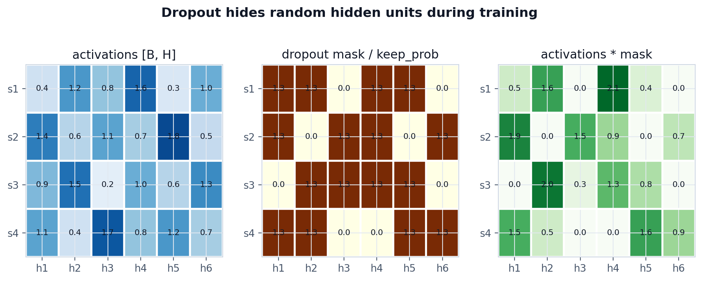
The important gotcha: dropout is on during training and off during evaluation. If you forget training=False during evaluation, accuracy becomes noisy because every evaluation uses a different mask.
By now the model has enough moving parts that most bugs are no longer syntax bugs. They are shape, order, or training-mode bugs.
Common Bugs
- Forgetting to divide the gradient by batch size in
SoftmaxCrossEntropy.backward. - Writing
dW = dout @ x.Tinstead ofdW = x.T @ dout. - Summing softmax over the wrong axis. For class probabilities, each sample row should sum to
1. - Broadcasting bias correctly in forward but forgetting
keepdims=Truefordb. - Returning
dout @ Winstead ofdout @ W.TfromDense.backward. - Calling
optimizer.step()before the full backward pass. - Using dropout during evaluation because
training=Falsewas missing. - Computing softmax before argmax for accuracy. It is not wrong, but it is unnecessary.
Most of these mistakes come from losing track of the same three things: shapes, gradient flow, and whether the model is training or evaluating.
Key Takeaway
The full model looks larger than the first neuron, but it is built from the same idea repeated carefully. At the basic level, a neural network is not a black box. In this post, the whole model is a few NumPy matrices, a ReLU mask, a stable softmax, and an SGD loop.
Neural network =
linear projections
+ nonlinear activations
+ a loss function
+ backpropagation
+ an optimizerFrameworks like PyTorch automate backward passes and parameter management, but the learning logic is still this loop: predict, measure the error, send the error backward, and update the parameters.
References
- CS231n, Neural Network Case Study - spiral dataset and a 2-layer neural network, excellent for a first lesson.
- Harrison Kinsley and Daniel Kukiela, Neural Networks from Scratch in Python - the book used for the neuron, Dense layer, activation, loss, optimizer, backpropagation, and regularization explanations.
- NumPy Tutorials, Deep learning on MNIST - an MLP-from-scratch example on MNIST.
- Karpathy, micrograd - a tiny scalar autograd engine, good for a longer session on computational graphs.